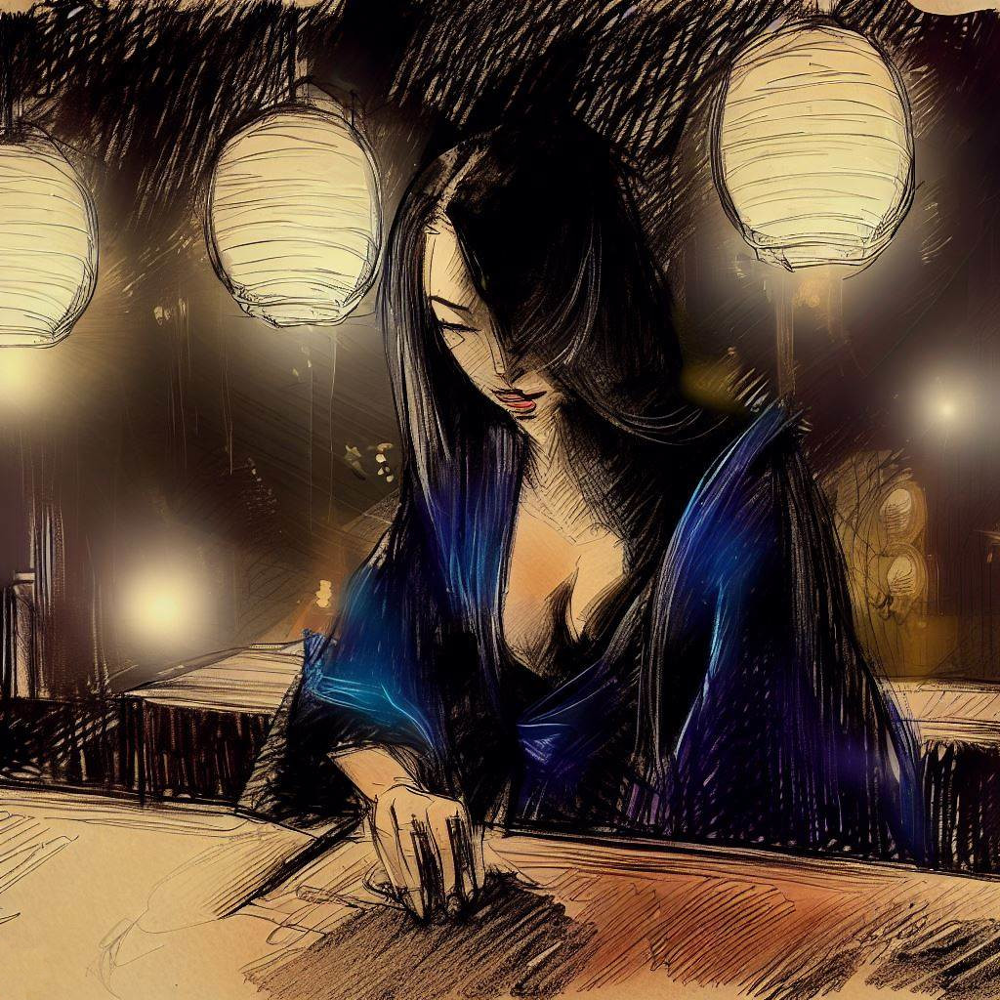
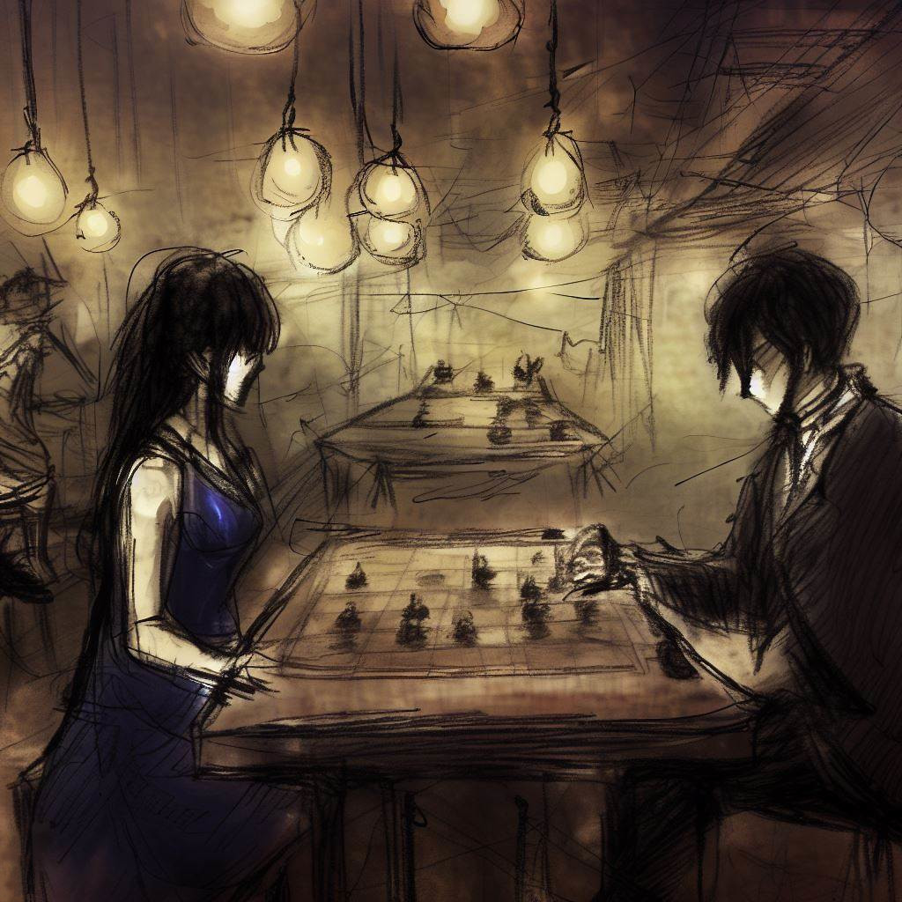
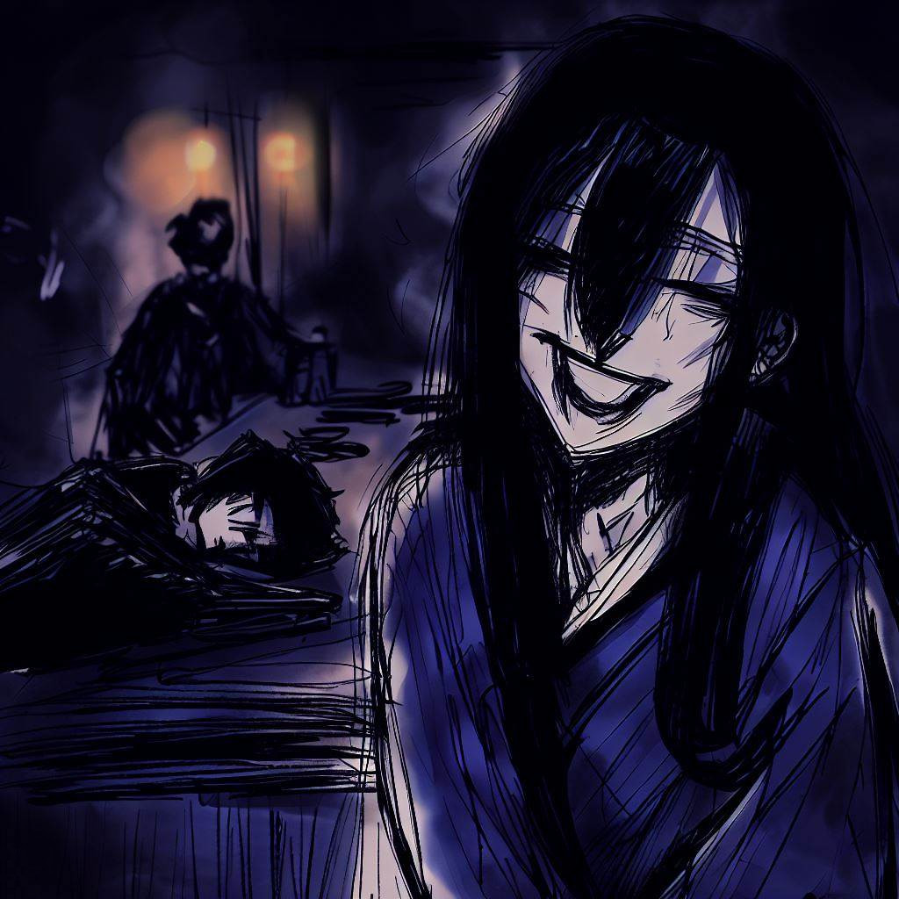

Komayo: Gema Mistis dari Permainan Ogi
Saya ingin mengucapkan terima kasih kepada Komayo. Dia mengajari saya sebuah permainan strategi yang sangat menarik. Saya akan menceritakan pertemuan kami. Ini adalah kenangan yang sangat saya sukai dan saya ingin membagikannya di sini.
Jalan Menuju yang Tak Dikenal
Hari sudah berakhir dan saya meninggalkan pekerjaan saya. Saya berada di Osaka dan saya menghirup udara malam yang segar. Kota ini tenang dan saya merasa damai.

Saya berjalan di jalan-jalan. Bangunan-bangunannya besar dan terang. Mereka indah di malam hari.
Saya melewati sebuah lingkungan yang ramai dengan restoran dan orang-orang yang sedang berbicara. Meskipun saya lelah, saya ingin melakukan sesuatu yang menarik. Kemudian, saya melihat sebuah bar bernama Regency Bar. Ini adalah tempat di mana orang-orang bermain shogi.
Saya merasa ingin masuk ke bar. Saya ingin mengambil tantangan dan sedikit bersantai.
Bar Permainan
Saya masuk ke Regency Bar. Ini adalah tempat yang tenang dengan cahaya yang lembut. Orang-orang di sini sedang bermain shogi.
Saya memesan segelas sake. Saya melihat sekeliling. Saya mencium aroma kayu dan dupa. Saya mendengar suara pion shogi bergerak dan orang-orang berbicara dengan lembut.
Ada pria dan wanita dari segala usia yang sedang bermain shogi. Mereka fokus pada permainan mereka. Mereka tampak bahagia, sedih, atau gugup dengan setiap gerakan.
Saya melihat seorang wanita sendirian di sebuah meja. Dia cantik dan tenang. Saya penasaran tentang dirinya. Saya mendekatinya, saya tersenyum dan saya bertanya apakah dia ingin bermain shogi dengan saya.

Sebuah Permainan yang Berbeda
Dia tersenyum ketika saya bertanya untuk bermain.
Dia mengeluarkan papan permainan. Itu tersembunyi di bawah kain. Saya terkejut. Papan itu lebih kecil dari biasanya. Itu memiliki lebih sedikit kotak dan bidak. Alih-alih memiliki 9x9 kotak seperti shogi biasa, itu memiliki 8x8 kotak. Juga hanya ada 18 bidak untuk setiap pemain. Sebelum saya bisa bertanya, dia mulai menjelaskan. Dia bilang permainan ini disebut ogi.

Dia berbicara tentang sebuah bidak khusus. Itu adalah bidak putri. Dia mengatakan bahwa bidak ini membuat permainan menjadi lebih dinamis. Ketika dia melihat kejutan saya, dia tersenyum. Lalu,
dia mulai menempatkan bidak di papan.
Ketika dia menempatkan bidak, saya melihat sesuatu yang berbeda. Ada menara di sudut-sudut papan. Dia menjelaskan bahwa menara-menara ini menggantikan tombak dari shogi biasa.
Ketika semua bidak ada di papan, saya sangat bersemangat. Saya sangat ingin memainkan permainan baru ini. Dan saya ingin tahu lebih banyak tentang wanita misterius ini.
Uji Permainan
Jam terus berdetak. Hening hanya dipecahkan oleh suara bidak bergerak di papan. Bidak bergerak dengan tekad. Putri memimpin permainan. Keheningan permainan mengisi ruangan. Sangat intens.
Wanita itu bermain sangat baik. Ketika dia menangkap salah satu bidak saya, dia bisa meletakkannya kembali di papan untuk memainkannya sebagai salah satu bidak miliknya sendiri. Setiap gerakan yang dia lakukan adalah pelajaran untuk saya. Dia memberikan banyak perhatian pada setiap bidak.
Saya terus bermain. Saya memindahkan bidak-bidak saya dengan banyak energi. Saya melindungi raja saya. Tetapi dengan setiap gerakan, saya merasa semakin lelah. Mata saya semakin berat.
Akhirnya, saya tidak bisa tetap terjaga lagi. Saya terlalu lelah. Semuanya menjadi gelap. Hal terakhir yang saya lihat adalah senyuman wanita itu. Dia sangat bahagia.

Kebangkitan yang Mengejutkan
Saya tertidur, tersesat dalam gelap. Lalu, sedikit demi sedikit, saya bangun. Sudah pagi. Saya membuka mata saya. Bar itu hampir tidak berubah.
Papan permainan masih ada di sana, sama seperti hari sebelumnya. Tetapi wanita itu tidak ada di sana. Dia sudah pergi. Ketidakhadirannya meninggalkan kekosongan. Bar itu sangat tenang.
Saya melihat selembar kertas di samping papan permainan. Saya mengambil kertas itu. Ada satu kata di atasnya: "Terima kasih". Dan sebuah nama: "Komayo". Nama ini adalah kenangan terakhir dari wanita itu. Saya telah menghabiskan malam yang luar biasa bersamanya, bermain ogi di Regency Bar.